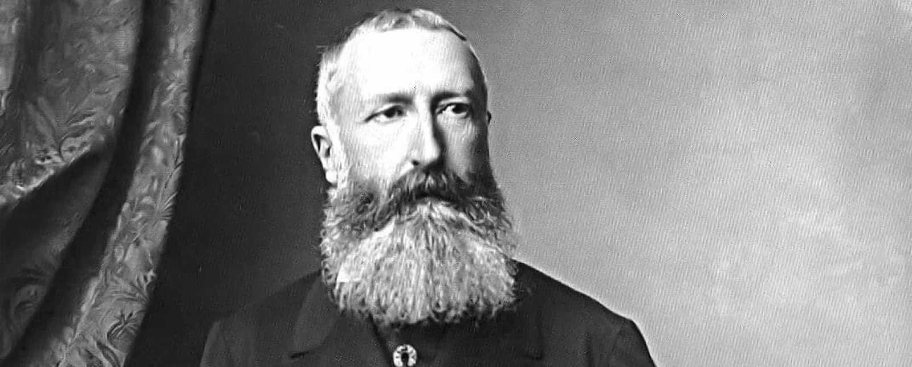

Biography
The king of Belgium from 1864 to 1909, Leopold II was born April 9th in the year 1835. Son of Leopold I and Louise of Orleans, he pursued an aggressive nationalistic campaign in Africa. Leopold II was related to many monarchs in western Europe, being the grandson of Louis Philippe. Moreover, Queen Victoria was his cousin, as his father and her mother were siblings. His mother died when Leopold was fifteen years old. After huge amounts of service in his own government, Italian anarchist Gennaro Rubino attempted to assassinate the king. He survived, and politicians and leaders from all around Europe congratulated him for surviving. Six years later, he died, passing on the crown to his nephew, Albert I.
Leopold II’s older brother had died the year before he was born, meaning that he was destined to be king from birth. When he was 9 years old, he became a sub-lieutenant in the army. By 1855 he was a member of the Belgian Senate, and by 1865 he was a lieutenant general. The sole goal in mind for Leopold as a politician was to increase Belgium’s influence in Europe and abroad. He saw the geographical size of Belgium, and knew that the only way to increase the influence of it was to attain overseas territories. Under him, multiple liberal policies were passed, including but not limited to: the creation of public schools, laws against child labor, and universal male suffrage. In addition to liberal policies however, Leopold II acted on his disdain for Belgium’s vulnerability by pushing for the construction of multiple fortresses, and the passing of compulsory military service.
Continuing the trend of ventures that promoted Belgium’s national presence, the Congo Free State was established, as Leopold’s private colony. At the time, ivory was an extremely lucrative material to sell, and the Congo Free State possessed huge amounts of it. Harvesting it gave Leopold II and Belgium a fortune. After the replacement of ivory by rubber, the trees that were required to produce rubber largely populated the Congo Free State, allowing Belgium to further increase her fortune. Later, Belgium’s purchase of the Congo Free State, and multiple properties of Leopold II allowed Belgium to develop its own wealth further, accomplishing Leopold’s original goal of expanding Belgium’s influence.
Ultimately, Leopold's use of the Congo Free State led to his support from many Belgians in his time. Statues were erected of him, and streets were named after him, many of which still remain to the present day.